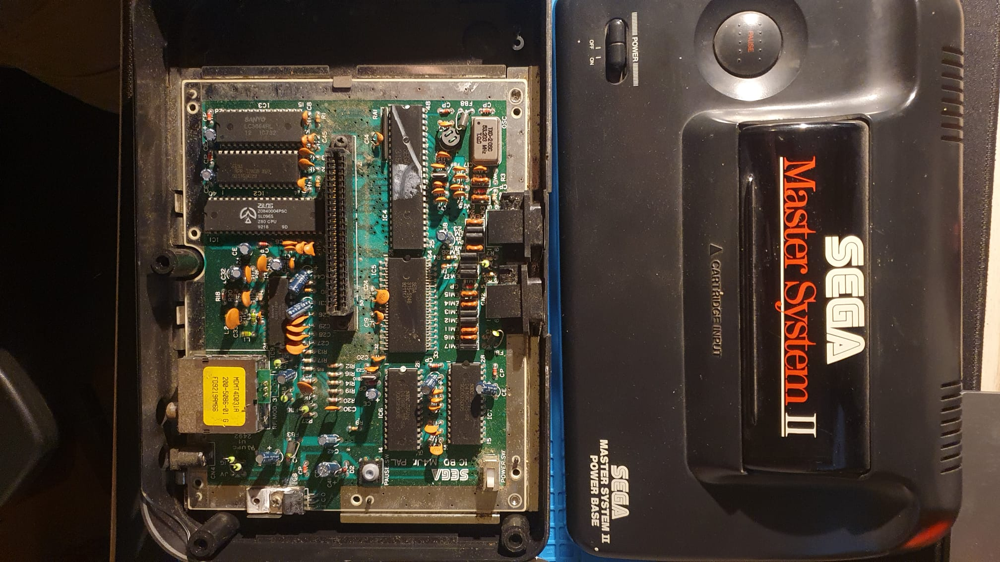

Building a Simple FM Radio Receiver
In this post, we will build a simple FM radio receiver using basic electronic components. This project is perfect for learning about radio frequency circuits.
Materials Needed
- FM Tuner Module
- Speaker
- Resistors (various values)
- Capacitors (various values)
- Breadboard
- Jumper wires
- 9V Battery
Steps
- Connect the FM tuner module to the breadboard.
- Wire the output of the tuner module to the speaker.
- Add necessary resistors and capacitors as per the module's datasheet.
- Power the circuit using the 9V battery.
- Adjust the tuner module to find FM stations and enjoy the audio output!
Conclusion
This project introduces the basics of radio frequency circuits and demonstrates how to build a simple FM radio receiver. Experiment with different components to improve reception quality!